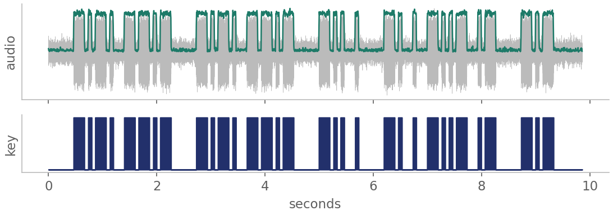

Inside NEXA: system architecture
See the whole spectrum, name every emitter, listen and read it, with a human in charge, fully offline
ATHE SYSTEM, END TO END
1 · SEE THE SPECTRUM
CaptureSDR, IQ file or simulator, any sample rate
Spectrogramthe whole band over time
Detector (YOLO)boxes every emitter · AP 0.70
Cut and cleanshift to 0 Hz, filter, active windows
2 · NAME IT
Classifier60 classes, 4 views (session 3)
Tracker + votejoins one emitter's windows over time
Resolverpairs, groups, confidence band
Operator dashboardboxes, answers, alerts, timeline
3 · LISTEN AND READ IT (voice and Morse channels)
Zoom-inAM / FM / SSB / CW recognised by rule
Demodulateaudio out of the IQ
Speech → textWhisper, offline
Morse → textour decoder (C)
AI reasoninglocal LLM: summary, who, where (D)
BEVERY EMITTER, BOXED

A wideband scene: each box becomes its own track, named and followed over time.
EHUMAN IN THE LOOP
Operator flags or correctsany answer on the dashboard, one click
Analyst approvessees the signal again before it counts
Retrain, then a gatethe new model goes live only if it beats the current one; roll back any time
Every capture, decision and correction is kept in a local database with a tamper-evident audit trail.
OFFLINE · ONE WORKSTATION · NO DATA LEAVES
CMORSE DECODER

find the beep pitchloudness track (5 ms)key down / up, two thresholdsdot length per transmissiondots, dashes, gaps → letters
CQ CQ DE NEXA Kdecoded · 18 WPM · 699 Hz tone · test message at 12 dBDAI REASONING, KEPT HONEST
"summary": one or two lines
"category": calling / message / coded groups …
"call_signs", "places", "evidence": quotes
Local model (Ollama), nothing sent out.
Call signs, places and quotes not in the decoded text are removed.
Category from a fixed list; confidence drops on a poor decode.
The decoded text is shown beside it, so a person can check.